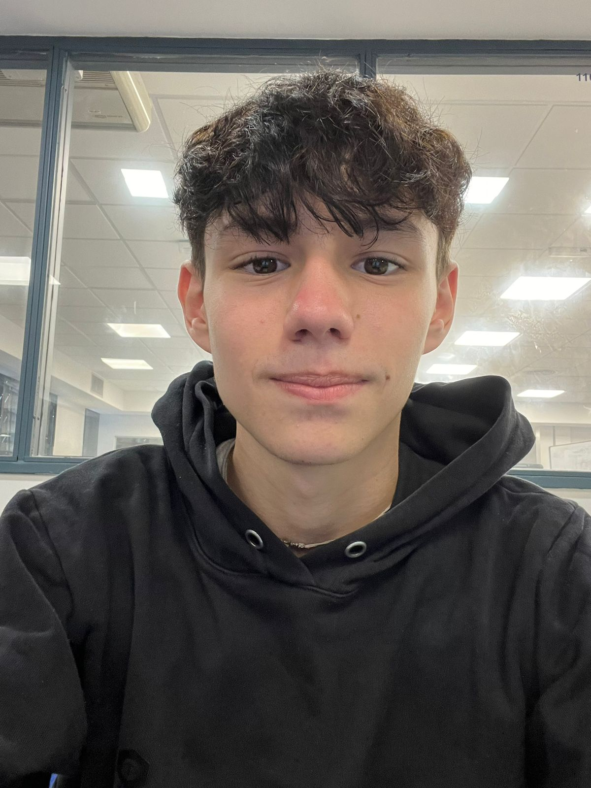

Desarrollador web junior con foco en frontend y fullstack. Egresado de Informática en ORT y estudiante de Ciencias de la Computación en UBA. Inglés C1 en ORT.

Soy Franco Román Zaina, desarrollador web con formación sólida tanto práctica como académica. Me recibí de Técnico en Informática en ORT Argentina en 2023, donde desarrollé proyectos reales con tecnologías como React, C#, SQL Server, JavaScript y la integración de APIs REST, utilizando .NET 8 para la arquitectura del backend. Actualmente curso la carrera de Ciencias de la Computación en la UBA
Cuento con proyectos donde apliqué lógica basada en Hooks y estados dinámicos en el frontend, junto con el uso de ASP.NET Core MVC, SQL Server y Dapper para la gestión de datos en el backend. Asimismo, dispongo de repositorios con resoluciones de problemas lógicos en Python y programación funcional en Haskell, desarrollados como parte de mi formación académica.
Tengo un nivel de inglés avanzado (C1) alcanzado durante mi formación en ORT. Busco mi primera oportunidad laboral remota como desarrollador, con un esquema compatible con mi cursada universitaria.
Colección de ejercicios de lógica y programación desarrollados para la materia Introducción a la Programación de UBA Exactas. Énfasis en resolución de problemas y fundamentos.
Ejercicios de programación funcional pura en Haskell, desarrollados en UBA Exactas. Incluye recursión, tipos de datos algebraicos, funciones de orden superior y pattern matching.
Estoy buscando mi primera experiencia laboral remota como desarrollador. Si tenés un proyecto o posición que encaje con mi perfil, me encontrás por acá.